O Nordeste virou
a maior mina de ouro
gastronômica e
cultural de
São Paulo.
E todo mundo percebeu que a cultura
nordestina vive seu momento mais forte
e lucrativo em São Paulo.
Capítulo 01 · Diagnóstico de Cenário · 35 Anos de História
O Maior Ecossistema do Brasil
35 anos construindo a estrada. Quem está colhendo esse mercado hoje?
Desde 1991, o CTN reúne gastronomia, música e fé em 27 mil m² — enquanto novos concorrentes disputam nas telas o público que o CTN formou.
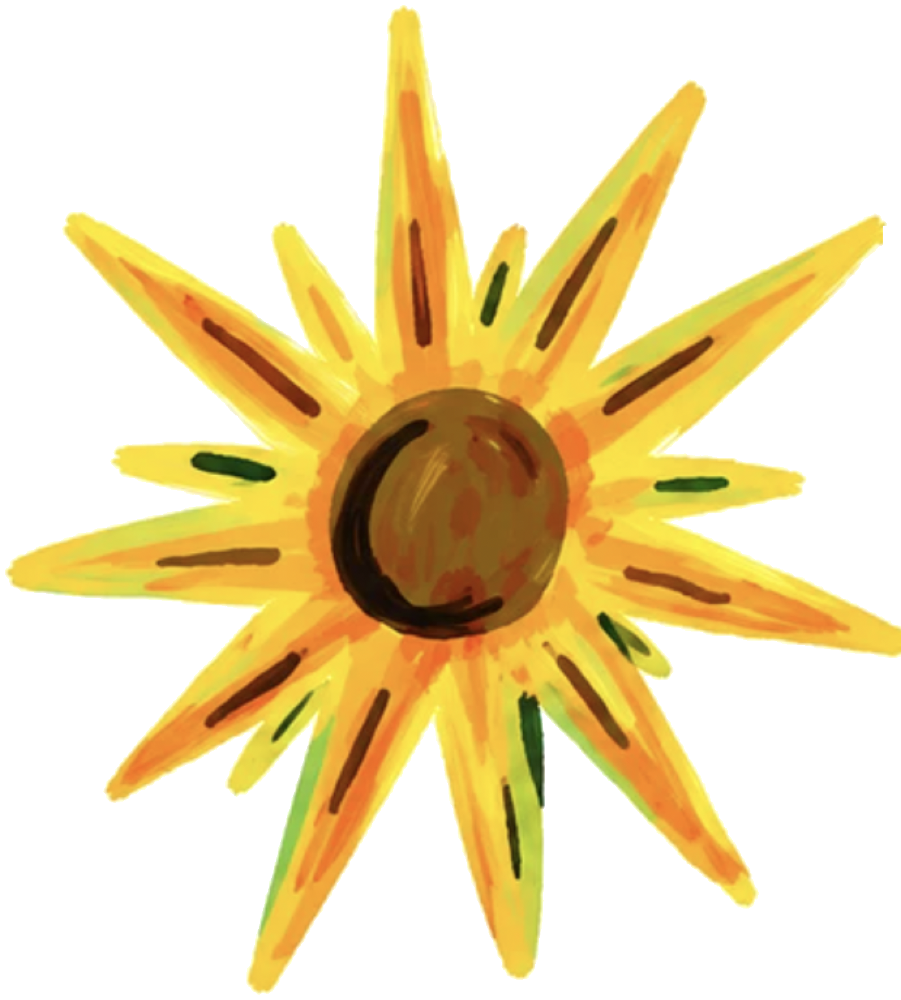
IBGE · Prefeitura SP*
~3,4 milhões*~4 milhões*de nordestinos e descendentes em SP — hoje em disputa aberta.
Capítulo 02 · As 4 Perguntas Decisivas
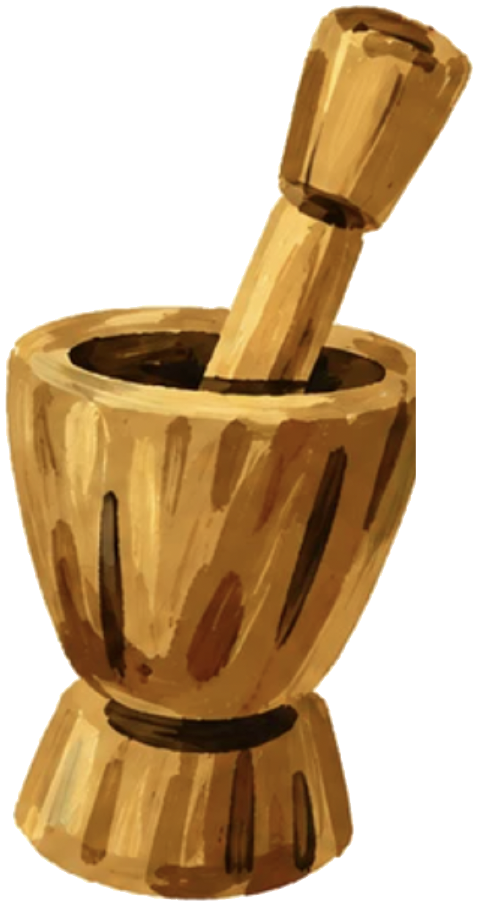
Pergunta 01 / 04 · Concorrência
Chris, você já percebeu que bares e eventos menores estão ocupando a mesa que o CTN construiu?
A verdade nas telas
Sim — estão usando a nossa fórmula para encher as mesas deles.
Em 35 anos, o CTN criou o amor pelo Nordeste em São Paulo. Hoje, casas menores surfam essa onda todos os dias com um gesto simples: filmam comida real saindo no vapor.
Você acha que 35 anos de história, sozinhos, garantem o almoço do próximo domingo?
O alerta do hábito
Não garante. Mudou como a família escolhe o almoço de domingo.
As famílias continuam amando o CTN — mas o maior risco hoje é ficar na memória apenas para datas especiais enquanto o almoço de domingo vai para outro lugar.
Respeito ≠ Frequência
Sem apetite na tela todo domingo, até uma marca gigante vira só um
«passeio de 1× por ano»
Todo paulistano guarda carinho pelo CTN. O perigo real é a família voltar 1 vez por ano no São João… e escolher bares menores nos outros 45 domingos porque eles aparecem na hora da fome.
01 · Fama × Escolha
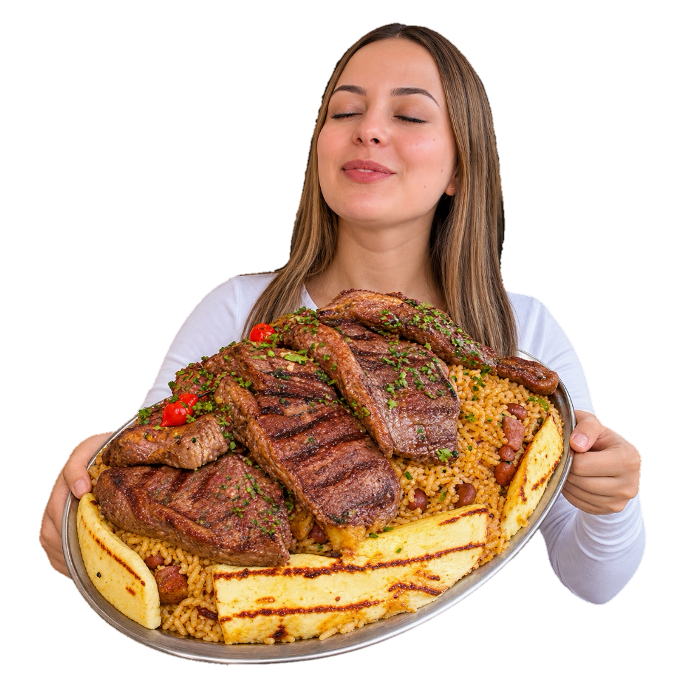
Conhecido ≠ Escolhido
No domingo, o carro não sai pela fama — sai pelo prato que deu fome na tela.
01 · O Impacto Real
Lembrança antiga não enche a mesa toda semana.
Todo mundo conhece o CTN. Mas quem aparece no feed com baião fumegando hoje é quem leva a família para almoçar.
02 · Nova Geração
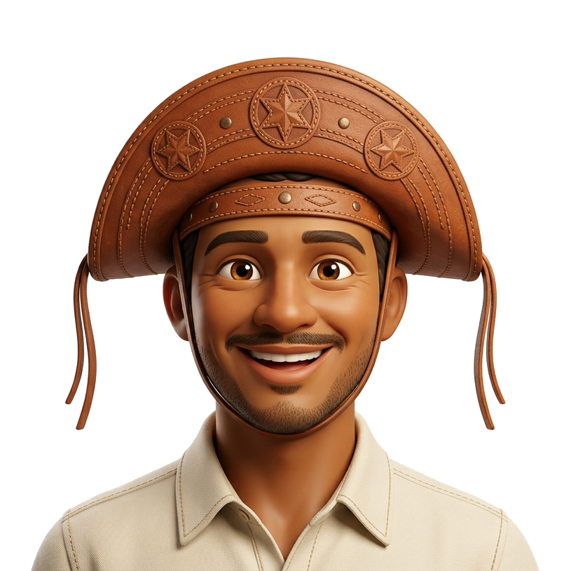
Público 20–35 Anos
Jovens e casais decidem onde comer vendo vídeos no TikTok e Reels.
02 · Futuro da Casa
Quem tem 28 anos hoje traz os pais — e forma os filhos.
Os pais já amam o CTN há 35 anos. Mostrar carne na brasa e salão vivo no Reels e TikTok garante os próximos 20 anos de mesa cheia.
03 · Presença no Feed Hoje
Hoje no celular, quem está aparecendo todo dia para o público?
Clique acima para testar quem o público vê hoje antes de escolher onde comer.
03 · O Motivo
O concorrente aparece porque posta — e o CTN fica quieto.
Não falta público nem história: casas muito menores levam a família porque estão presentes todo dia na tela com comida real, enquanto não temos rotina diurna.
04 · A Virada do CTN
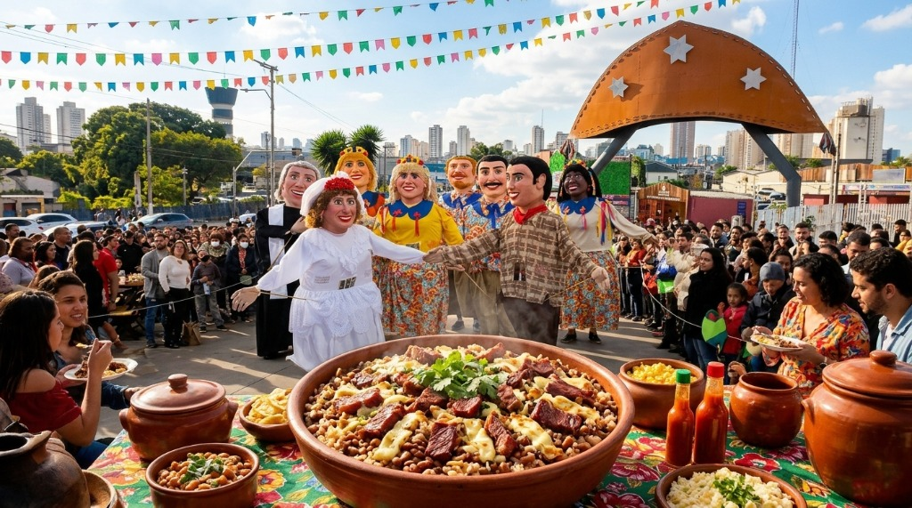
Estrutura Imbatível
Capela, estacionamento e 10 restaurantes em um só lugar.
04 · Quando Ligamos as Câmeras
Com a verdade do salão na tela, nenhum concorrente compete.
Um único vídeo do nosso baião de dois bateu 14,1 mil curtidas* e 238 compartilhamentos*. Falta só transformar isso em rotina diurna nas 5 redes.
“Lembrança só em datas especiais — ou o primeiro desejo da família toda semana?”
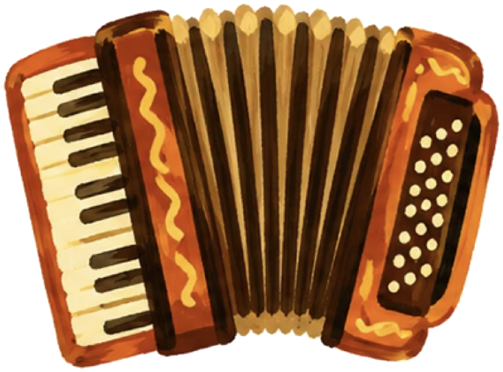
Pergunta 03 / 04 · Na Tela Hoje
É possível que o foco só em shows esteja deixando o almoço livre para a concorrência?
Diagnóstico em 2 capítulos
Toda a energia vai para 1 aplicativo — e quase zero para o almoço.
Em um domingo às 11h, quem segue o CTN vê cartaz de show noturno — enquanto quem busca onde almoçar cai nos concorrentes nos outros 4 caminhos.
Capítulo 1 · O Mapa da Atenção Hoje
Por que toda a energia vai só para o Instagram?
Colocamos 100% da rotina diária em uma vitrine onde posts somem rápido — enquanto 4 grandes portas de descoberta seguem desligadas. Role e acompanhe:
1 de 5canais com rotina
01
Famílias digitam “onde comer baião de dois em SP” todos os dias. Só 3 fichas internas do CTN já somam mais de 1,7 milhão* de visualizações no escuro — sem fotos novas, cardápio visual ou resposta oficial da marca.
02
Dos netos de 25 anos às vovós que adoram vídeo de cozinha, 131 milhões* de brasileiros descobrem restaurantes pelo apetite visual. Sem rotina do CTN, restaurantes menores ficam com todas as buscas.
03
Story no Instagram some em 24h. Um vídeo real da nossa cozinha e dos shows no YouTube aparece nas buscas do Google e na TV da família por anos — e ainda remunera o canal via AdSense* (55% / 45%).
04
Mais de 1 milhão* de pessoas já curtem a página esperando missa, agenda na aba Eventos Oficiais e vídeos do salão — e sempre que postamos comida ou família ao vivo aqui, bate dezenas de milhares de curtidas.
Capítulo 2 · O Raio-X da Nossa Vitrine
Falamos só de show noturno — zero de almoço de família
Na Biblioteca Oficial da Meta, o contraste é imediato: vermelho total em cartazes de madrugada e zero em comida que abre o apetite para o dia.
~40*anúncios de show noturno rodando
0anúncios de gastronomia e almoço
● Vermelho: 100% da verba atual só em show● Verde: gastronomia & almoço de família (0 hoje)
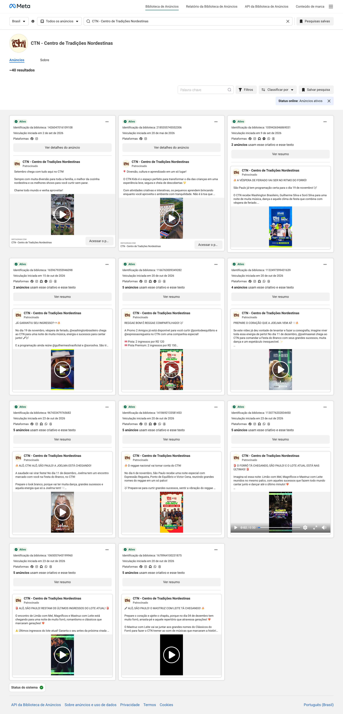
Hoje · 100% Shows Noturnos
O que aparece no celular hoje
~40*
Cartazes estáticos de madrugada ocupam toda a verba — quem busca almoço e família não enxerga nossa cozinha.
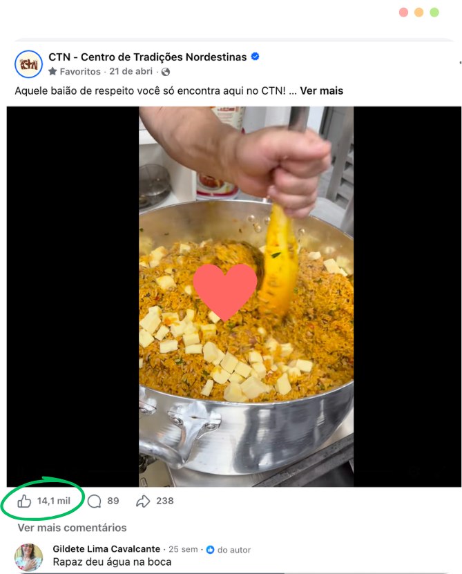
Print Real · 14,1 mil curtidas*
Quando mostramos a comida real
14,1K*
Sem gastar anúncio, uma única panela de baião bateu 14,1 mil curtidas* e 238 compartilhamentos — prova do apetite reprimido pelo CTN.
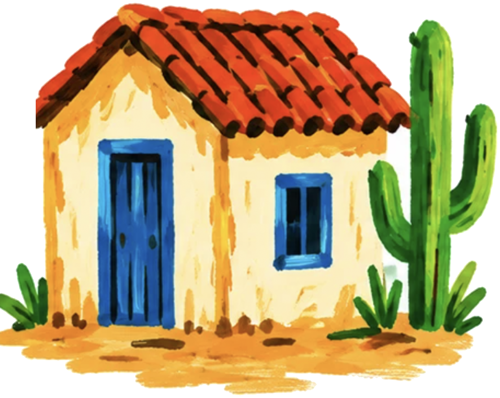
Pergunta 04 / 04 · Canais & Público
Chris, onde as famílias decidem o passeio hoje — e quantos motores estão desligados?
O mapa das 5 plataformas
Milhões de pessoas em 5 motores — e hoje o CTN liga só 1.
Toque em cada plataforma para enxergar o tamanho do público, quem bate o martelo do passeio e quem já espera pelo CTN.
Motor 01 · Vitrine Principal (Ativo hoje para shows)
147M*brasileiros no Instagram
Aqui o CTN já tem 1,5M* seguidores — uma vitrine gigante. Quem domina a decisão do passeio em casa aqui são as mulheres (64% contra 36%): basta trocar parte dos cartazes por comida quente.
Quem decide o passeio nesta rede
♀ 64% Mulheres (Mães & Anfitriãs)36% Homens ♂
Status do motor do CTN hoje
100% da rotina diária aqui (foco show)Motor 1/5
Arquétipo · ♀ 64% · 30–40 Anos
Carla, 36 · Mãe
Anfitriã do almoço de domingo
“Quero achar no celular um lugar gostoso onde meus filhos brinquem, o estacionamento seja fácil e o baião chegue quentinho.”
Busca: Opção segura em família para enviar no grupo do WhatsApp.
Gatilho que traz a Carla: Comida real saindo na brasa, Espaço Kids & Capela.
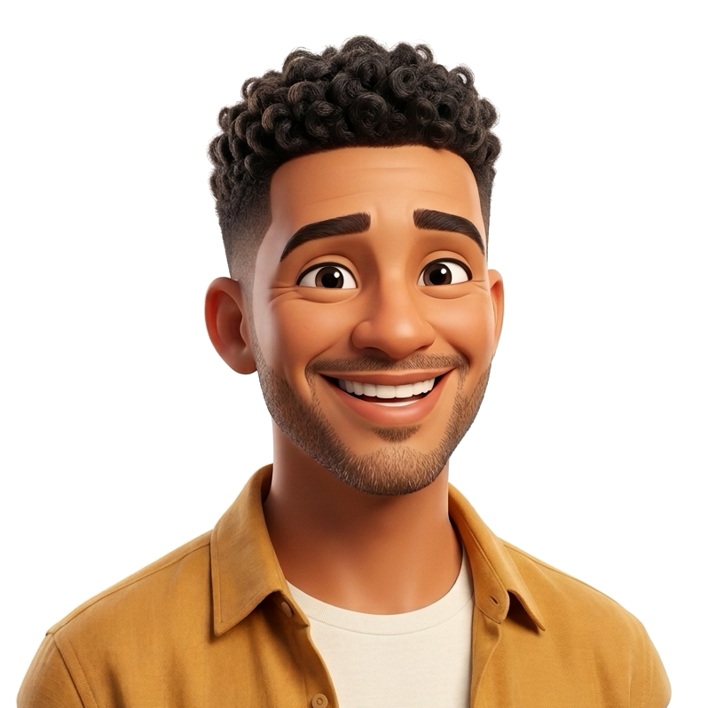
Arquétipo · ♂ 36% · 28–38 Anos
Bruno, 34 · Noite
Público de forró e show
“Curto ver o salão cheio de verdade, banda tocando ao vivo e saber na hora como garanto meu ingresso sem fila.”
Busca: Clima real da sexta/sábado à noite antes de chamar os amigos.
Gatilho que traz o Bruno: Bastidores ao vivo do palco + link rápido no Direct.
Motor 02 · Descoberta pela Boca (Hoje sem rotina)
131M*brasileiros no TikTok
Jovens de 20 a 35 anos — e até avós conectadas — escolhem restaurantes pelo vídeo que dá água na boca. São 58% de mulheres puxando descobertas onde o CTN ainda não posta todo dia.
Quem decide o passeio nesta rede
♀ 58% Mulheres (Busca de Experiência)42% Homens ♂
Rotina diária do CTN hoje
0% rotina de gastronomia ativa aquiMotor Desligado
Arquétipo · ♀ 58% · 20–30 Anos
Júlia, 26 · Exploradora
Troca o Google pelo TikTok
“Quando dá vontade de comer algo nordestino no fim de semana, eu pesquiso direto no TikTok para ver o prato real.”
Busca: “Comida nordestina SP” para ir com namorado ou amigas.
Gatilho que traz a Júlia: Queijo derretendo, carne na chapa e clima animado.
Arquétipo · ♂ 42% · 25–35 Anos
Lucas, 31 · Cultura
Compartilha achados nos grupos
“Sempre mando no grupo da galera quando acho um lugar com churrasco arretado, música boa e resenha autêntica.”
Busca: Humor genuíno, cozinha ao vivo e sotaque de verdade.
Gatilho que traz o Lucas: Garçons carismáticos, cozinha aberta e sanfona no salão.
Motor 03 · Vídeo Longo, TV & Buscas Google
150M*brasileiros no YouTube
Enquanto story some em 24h, um vídeo de cozinha no YouTube fica anos no Google — com 56% de homens de maior ticket planejando passeios na TV da sala e gerando receita em AdSense* (55% / 45%).
Quem decide o passeio nesta rede
♂ 56% Homens (Maior Ticket da Mesa)44% Mulheres ♀
Rotina diária do CTN hoje
Canal inativo — sem buscas & sem AdSense*Motor Desligado
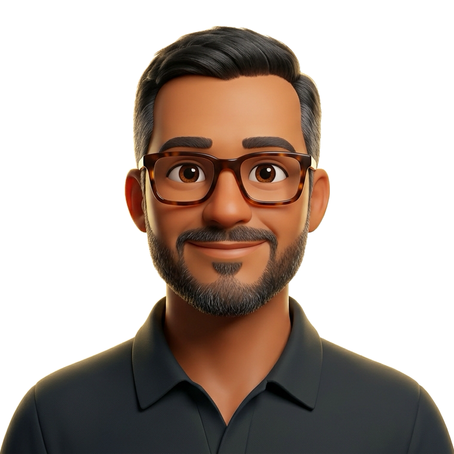
Arquétipo · ♂ 56% · 40–50 Anos
Roberto, 44 · Pai
Planeja passeio completo de domingo
“Antes de levar pais, esposa e filhos, quero ver um vídeo mostrando os restaurantes, o conforto e se o estacionamento é seguro.”
Busca: Estrutura de confiança assistida na TV ou celular da família.
Gatilho que traz o Roberto: Tour pelos 10 restaurantes, pátio livre e ambiente familiar.
Arquétipo · ♀ 44% · 45–58 Anos
Helena, 51 · Tradição
Reúne filhos, genros e netos
“Adoro rever festas juninas e receitas nordestinas na TV da sala — dá uma saudade boa que já combina o almoço do domingo.”
Busca: Cultura viva, culinária tradicional e grandes encontros.
Gatilho que traz a Helena: Documentos curtos da cozinha e festivais achados no Google.
Motor 04 · Rota na Hora da Fome (98% do país)
~184M*brasileiros em Google & Maps
Aqui a decisão já está tomada — falta escolher onde estacionar às 11h30. Só 3 fichas internas do CTN somam +1,7M* visualizações no escuro, com 52% de mulheres traçando rota rápida.
Quem traça a rota nesta plataforma
♀ 52% Mulheres (Rota Imediata)48% Homens ♂
Gestão ativa das fichas pelo CTN hoje
+1,7M* views sem gestão unificadaSem Gestão Ativa
Arquétipo · ♀ 52% · 35–45 Anos
Família às 11h30
Com a chave do carro na mão
“Já estamos saindo de casa com fome! Mostra logo foto do prato de hoje, se tem estacionamento e abre a rota no Waze/Maps.”
Busca: Almoço imediato aberto agora perto da zona norte / Barra Funda.
Gatilho às 11h30: Fotos novas dos pratos + nota 4,5★ bem respondida.
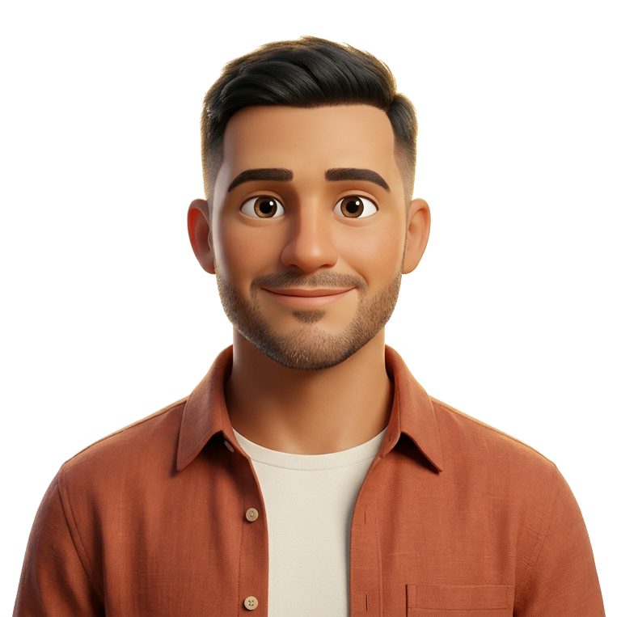
Arquétipo · ♂ 48% · 35–50 Anos
Tiago, 41 · Visitante SP
Compara o Top 3 do Google
“Pesquisei ‘melhor restaurante nordestino em SP’ — vou clicar no que tiver o melhor cardápio visual e horário claro de domingo.”
Busca: “Restaurante nordestino SP” com avaliação confiável e preço transparente.
Gatilho que traz o Tiago: Cardápio atualizado, entrada franca diurna e avaliações vivas.
Motor 05 · Comunidade Fiel (+1M* Fãs Prontos)
109M*brasileiros no Facebook
O CTN já soma mais de 1 milhão* de fãs fiéis aqui esperando notícias — e 59% são matriarcas que trazem mesas de 6 a 10 pessoas quando vêem Missa, Eventos Oficiais e prato do dia.
Quem reúne a família nesta rede
♀ 59% Mulheres (Matriarcas da Casa)41% Homens ♂
Aproveitamento dos +1M* fãs hoje
Base gigante adormecida (sem Eventos Oficiais)Adormecido
Arquétipo · ♀ 59% · 50–65 Anos
Dona Francisca, 54
Traz 6 a 10 pessoas na mesa
“Domingo eu gosto de ir à missa de manhã e reunir filhos e netos na mesma mesa grande com comida nordestina de verdade.”
Busca: Horário de missa, programação acolhedora de dia e pratos fartos.
Gatilho que traz Dona Francisca: Aba Eventos Oficiais + vídeos afetivos do domingo.
Arquétipo · ♂ 41% · 45–60 Anos
Seu Antônio, 49
Comunidade raiz de +1M* fãs
“Sigo o CTN faz anos no Face! Quando passa vídeo da sanfona roncando e do forró pé de serra, já marco minha esposa na hora.”
Busca: Forró pé de serra, sanfona autêntica e encontro da comunidade.
Gatilho que traz Seu Antônio: Vídeos nativos de sanfona, tradição e gastronomia raiz.
Hoje · 1 Motor Ligado
Só no Instagram
Fala apenas com quem já segue (1,5M*)
Post desaparece em 24h–48h
Depende de verba constante de anúncio
Virada 2027 · 5 Motores
Todos os Canais + Receita*
1 vídeo roda nos 5 canais ao mesmo tempo
Maps & TikTok trazem famílias novas às 11h
Monetização*: YouTube (55%/45%), TikTok Rewards, Meta
Parte 2 · Atos 05 a 07 · Eventos & Retomada
Quando o CTN filma a casa viva, o público multiplica
O histórico de 2019 a 2026 comprova: toda vez que o feed mostra comida real, boxistas, festa e fé ao vivo, o alcance explode sem depender só de anúncio.
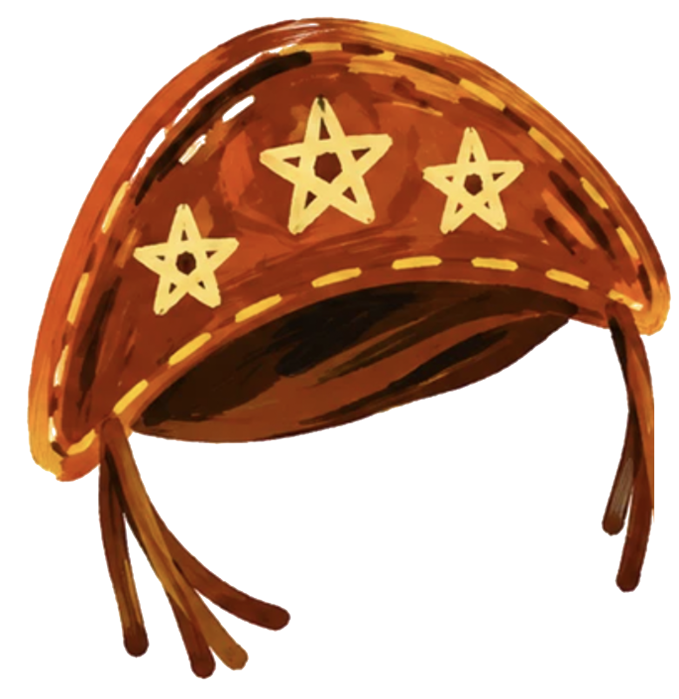
Parte 2 · 05 / Presença & Repost
Quando filmamos a casa viva o alcance dispara — mas você acha que repetir vídeo antigo dá no mesmo?
Histórico Oficial do CTN · 2019–2026*
Com cobertura viva e personagens, o Instagram saltou +60,4%* em 1 ano.
Os números do próprio CTN mostram: quando entraram personagens e cobertura ao vivo todo fim de semana, o perfil bateu recorde histórico.
01 · Curva de Crescimento Instagram CTN
De 230 mil* para ~1,5 milhão* — toque em um ano para ver o que puxou
O maior salto percentual (+60,4%*) veio em 2024 com personagens nordestinos e salão filmado ao vivo.
2024 · +60,4% em 1 ano (pico de crescimento): personagens nordestinos, cobertura viva todo fim de semana e Jan/2024 com ~10M* de alcance e +700K* engajamentos.
02 · O Custo de Repetir Arquivo Antigo
Mesmo vídeo, diferença brutal: ineditismo rende quase 4× mais
Quando o perfil repete vídeo já visto em vez de gravar a casa viva, o algoritmo freia a entrega na hora.
Teste Real no Mesmo Formato (CTN)−73%* de resposta no repost
Inédito · Verde
2332
Repost · Vermelho
621
Inédito · BomPublicação Nova
2.332 curtidas* orgânicas
Material inédito desperta curiosidade real, faz o seguidor comentar e aciona a entrega para novos perfis na cidade.
Repost · Ruim (−73%*)Arquivo Repetido
Cai para 621 curtidas*
Quem já segue sente sensação de “já vi isso” e passa direto. Com menos retenção nos 3 primeiros segundos, o alcance afunda.
Nunca repetir arquivo idêntico no feed: um mesmo domingo ao vivo rende 3 a 4 ângulos inéditos (chapas na cozinha, família chegando, música no salão, depoimento de boxista) sem parecer repetido.
03 · Cobertura Viva (Março & Abril)
Quando mostramos a casa viva, um único post bate dezenas de milhares
Toque nas 4 abas abaixo para abrir um caso real por vez — zero poluição visual.
Salão Lotado · MarçoCTN Oficial
Famílias reais chamam novas famílias
Sem arte pesada e sem texto longo: gente feliz comendo junto ativa a prova social instantânea de domingo no celular.
908 pessoas enviaram esse vídeo no WhatsApp e Messenger para chamar parentes no domingo seguinte. Quando mostramos o clima vivo, o próprio público faz a divulgação de graça.
A missa e a devoção criam vínculo emocional profundo com avós e pais — quase 300 comentários reais em um único post.
Bares menores jamais terão a Capela CTN. Colocar essa rota na vitrine fixa atrai a família inteira já na manhã de domingo para a missa seguida do almoço.
5,9K*Curtidas
295*Coment.
184*Compart.
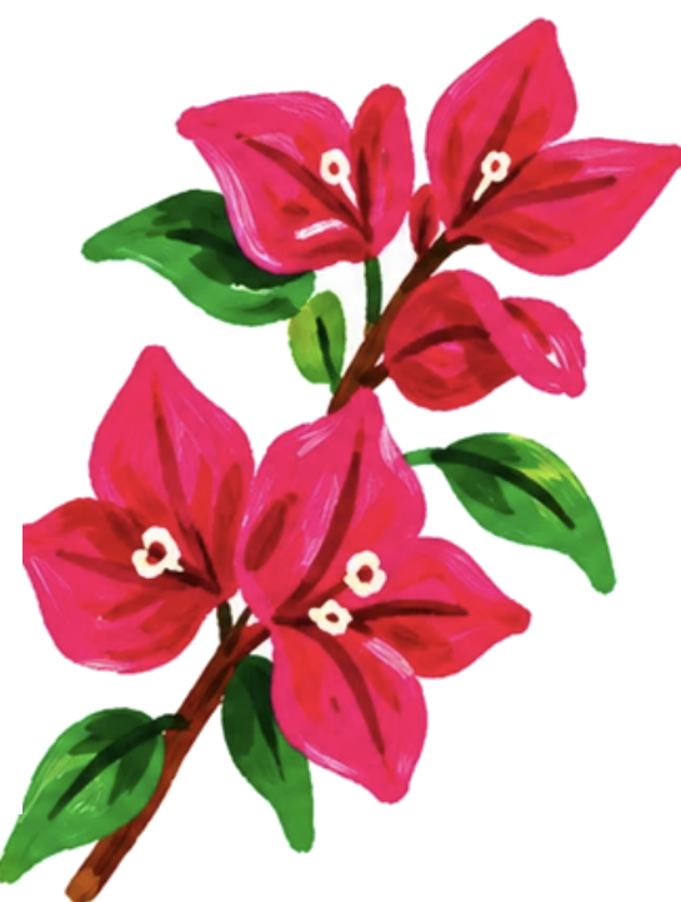
Parte 2 · 06 / Festival & São João
Será que no Festival e no São João o público mudou — ou foi o tipo de post na tela que mudou?
Duelo Real · Mesmo CTN, Conteúdo Oposto
Em 2025 (vivo) milhares responderam; em 2026 (arte/teto) caiu até 99,9%.
Compare 1×1 os mesmos eventos do CTN: em 2025 com comida, chegada e salão vivo versus 2026 com artes secas e emblemas — a diferença chega a −99,95%.
Festival Nordestino · Duelo 1: Baião com Queijo Coalho × Emblema no Teto−99,7%* de curtidas
2025 · Vivo
22.800*
2026 · Teto
64
2025 · FuncionouMesa & Fumaça
Comida real desperta desejo em 1 segundo
Baião farto e queijo coalho na tela fazem quem está em casa decidir vir passar o dia.
22,8K*Curtidas
420*Coment.
266*Compart.
2026 · Travou (−99,7%*)Teto Iluminado
Símbolo no teto não dá vontade de sair de casa
Sem gente e sem comida na tela, o mesmo evento cai para 64 curtidas e zero conversa.
64*Curtidas
1*Coment.
1*Compart.
Festival Nordestino · Duelo 2: Chegada nos Totens × Microfone de Palco−98,7%* de curtidas
2025 · Totens
15.100*
2026 · Mic
203
2025 · FuncionouClima da Entrada
Totens e povo entrando convidam para a festa
O público enxerga movimento real e compartilha (420×!) chamando a família para ir junto.
15,1K*Curtidas
164*Coment.
420*Compart.
2026 · Travou (−98,7%*)Cobertura Fria
Entrevista engessada parece TV institucional
Em formato jornalístico frio sem o cheiro da festa, a conversa cai para 203 curtidas.
203*Curtidas
21*Coment.
11*Compart.
Festival Nordestino · Duelo 3: Salão Almoçando × Flyer CVC Estático−99,95%* de curtidas
2025 · Salão
11.000*
2026 · Flyer
5
2025 · FuncionouGente & Prato
Almoço cheio com bandeiras lá no alto
A energia do domingo no pavilhão gerou 317 compartilhamentos orgânicos e 11 mil* curtidas.
11,0K*Curtidas
117*Coment.
317*Compart.
2026 · Travou (−99,95%*)Card Promo
Cartaz promocional frio gera 5 curtidas
Sem cena real de evento, o feed trata o flyer como propaganda e entrega quase zero.
5*Curtidas
0*Coment.
1*Compart.
Festival Nordestino · Duelo 4: Caju Assado Raiz × Corte Editado de Palco−99,6%* de curtidas
2025 · Tradição
7.000*
2026 · Palco
28
2025 · FuncionouMemória Afetiva
Caju na brasa gera 670 compartilhamentos
Cultura nordestina autêntica toca a saudade de quem é da terra e dispara comentários nostálgicos.
7,0K*Curtidas
201*Coment.
670*Compart.
2026 · Travou (−99,6%*)Corte Editado
Vídeo editado frio fecha em 28 curtidas
Sem conexão afetiva nos primeiros 3 segundos, o algoritmo interrompe o alcance antes da decolagem.
28*Curtidas
1*Coment.
3*Compart.
O algoritmo mede retenção e compartilhamento na 1ª hora. Gente chegando, caju na brasa, baião com queijo coalho e salão cheio ativam memória e vontade; emblema verde no teto, microfone formal e card promocional parecem anúncio comercial puro e são ignorados.
São João de Nóis Tudim · Duelo 1: Garçom com Tilápia × Arte Institucional−97,4%* de curtidas
2025 · Prato
8.100*
2026 · Arte
214
2025 · FuncionouGarçom & Mesa
Tilápia servida com sorriso na hora
Pessoa real servindo prato vivo gera 8,1 mil* curtidas e coloca o São João na pauta da família.
8,1K*Curtidas
102*Coment.
161*Compart.
2026 · Travou (−97,4%*)Arte Bahia/CTN
Banner gráfico sem movimento patina em 214
Sem comida, música ou rosto humano logo no início, o cartaz quase não cruza o próprio perfil.
214*Curtidas
16*Coment.
8*Compart.
São João de Nóis Tudim · Duelo 2: Galpão Lotado ao Vivo × Câmera Escura Distante−95,4%* de curtidas
2025 · Perto
6.000*
2026 · Longe
278
2025 · FuncionouDentro da Festa
Calor do público dentro do galpão cheio
A câmera no meio da festa passa energia imediata — 6 mil* curtidas e 240 compartilhamentos.
6,0K*Curtidas
107*Coment.
240*Compart.
2026 · Travou (−95,4%*)Câmera Distante
Imagem escura e distante esfria o convite
Sem rostos visíveis e ritmo quente logo na abertura, a entrega para em 278 curtidas.
278*Curtidas
14*Coment.
16*Compart.
Panfleto · RuimApp CTN
Card seco fecha com apenas 14 curtidas*
“Você já conhece o App CTN?” sem mostrar o benefício real na mesa da família não engaja.
14*Curtidas
0*Coment.
2*Compart.
Panfleto · RuimRubacão Estático
Prato forte reduzido a 13 curtidas* no cardápio
Um prato campeão virado de costas para a câmera perde para 13 curtidas quando vira cardápio gráfico.
13*Curtidas
0*Coment.
0*Compart.
01
Na auditoria das redes, a aba Eventos do Facebook Oficial estava há cerca de 1 ano sem novos cadastros — deixando de avisar milhões de famílias locais quando tem show, missa ou festival no CTN.
02
O público 35+ no Facebook adora acompanhar ao vivo o movimento de domingo e os festejos da Capela. Religar lives semanais curtas devolve notificação direta para a maior torcida fiel da casa.
03
Publicações cruzadas entre perfis diferentes e links soltos nos Stories desperdiçam quem já estava pronto para comprar ingresso ou traçar a rota até o Limão.
04
O CTN já tem ~196 mil* seguidores acumulados no Threads, além das fichas no Maps (+1,7M* visualizações somadas em só 3 restaurantes) e YouTube prontos para receber o mesmo corte vivo que já gravamos no domingo.
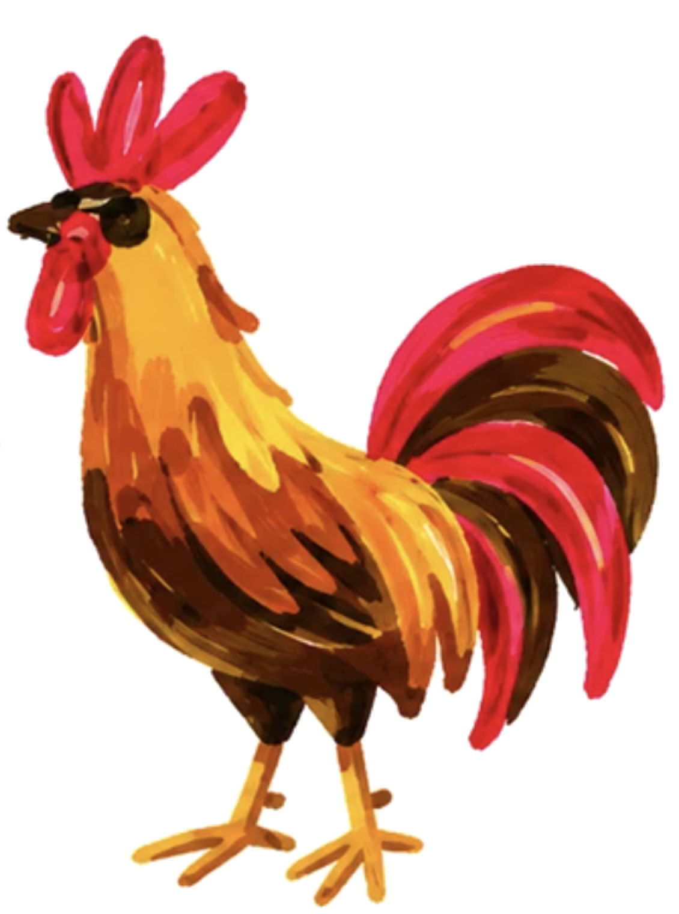
Parte 2 · 07 / Collabs & Plano 2026
Chris, e se usarmos os boxistas, os eventos e a Capela CTN para multiplicar público toda semana?
Plano Prático · Zero Invenção, 100% Casa Viva
Regra 60 · 25 · 15 no feed, Collabs no salão e resposta em 3 segundos*.
Só 3 Collabs reais com cozinha, boxista e a Capela já somaram +10,7 milhões* de visualizações sem pagar tráfego.
01 · Equilíbrio Semanal do Feed
Regra 60 · 25 · 15: o cliente vem pelo prazer, o evento lota no embalo
Quando 100% do feed vira anúncio ou panfleto, o público vai embora. Veja o equilíbrio saudável:
60%
Engajamento & Vida Real
Comida no vapor, personagens nordestinos, famílias chegando e bastidores do salão que dão fome e humor.
25%
Promocional com Alma
Shows, Festival, São João e ingressos sempre acompanhados de música ao vivo e clima real — nunca flyer seco.
15%
Collabs & Ecossistema
Boxistas, Capela e Rádio Atual filmados juntos em Collab, somando a audiência de todo mundo.
02 · A Prova Real das Collabs no Instagram
+10,7 milhões* de visualizações em apenas 3 Reels reais — sem anúncio pago
Quando restaurante, Capela e cozinheira entram no vídeo junto com o CTN, todos os públicos se multiplicam:
+4,6M*
Tábua Nordestina
Collab com restaurante interno mostrando abundância e sabor no ponto.
Não basta atrair: quem pergunta às 11h precisa de resposta em 3 segundos*
Quem responde primeiro leva o carro da família antes do almoço.
Hoje · Sem Automação~3 horas*
Direct perguntando “Que horas abre?”, “Tem estacionamento?” e preço fica parado — às 11h a família já escolheu outro lugar.
Com Manychat · Imediato3 segundos*
Comenta “EU QUERO” ou manda DM e recebe na hora: rota no Google Maps, horários, cardápio dos boxistas e link oficial de ingresso.
01
Um único turno de gravação no fim de semana rende cortes inéditos por 7 dias: prato saindo na chapa, música ao vivo, família nos totens e Capela — adaptados para Reels, TikTok, Shorts e Facebook.
02
Todo anúncio de show, Festival Nordestino ou São João abre com prato típico, música ao vivo e clima humano — empurrando vendas de mesa e ingresso sem sofrer queda de 99%.
03
Séries quinzenais apresentando os donos de restaurante (como Sabor de Mainha e Tábua Nordestina), programetes da Rádio Atual e missa da Capela garantem alcance milionário orgânico constante.
04
Religar a agenda mensal no Facebook Eventos, fazer lives rápidas aos domingos, manter fichas do Google Maps atualizadas e responder comentários/DM em 3 segundos via Manychat completa o ciclo do celular até a mesa.
Evidências Documentais · Cena 01 (SP 2025 → 2026)
Provas reais: o avanço externo e a demanda pronta do CTN
Radar Externo · Festas & Parques em SP
01 · O FatoSão João virou agenda de parques urbanos
Villa-Lobos, Ibirapuera, Memorial e Barueri entraram na rota familiar fora e dentro de junho.
02 · A Prova12 dias gratuitos só no Villa-Lobos (InHaus)
Mote “Um Pedacinho do Nordeste em São Paulo” (31/mai a 22/jun) com cenografia de grande porte.
03 · Impacto CTNA disputa começa na descoberta em tela
Quem não aparece antes do fim de semana no feed e nas buscas perde famílias para roteiros itinerantes.
Parque Villa-Lobos · 31/mai a 22/junParque Ibirapuera · Arraial EstreladoMemorial da América Latina · Barra FundaBarueri · Festival Baião de Dois (Set)
Radar Externo · Casa Sertaneja na Água Branca
01 · O FatoTemplo sertanejo abriu 4 noites de forró
Villa Country (a poucos minutos do CTN) realizou edição julina temática de 23 a 26 de julho.
02 · A Prova9 atrações de piseiro & forró no cartaz
Programação oficial fechada com nomes do topo das paradas nordestinas + comidas típicas.
03 · Impacto CTNDemanda validada o ano inteiro
Se a vizinhança lota fora de junho com ritmos nordestinos, o potencial do CTN em tela cheia é gigantesco.
Elenco escalado para as 4 noites (Água Branca):
Filho do PiseiroTarcísio do AcordeonVitor FernandesIguinho & LulinhaToque DezNetto BritoFelipe AmorimRaí Saia Rodada
Além da música, o evento operou cenografia completa e barracas de milho, canjica, curau e quentão — sinal claro de que o paulistano paga pela experiência nordestina completa mesmo após junho.
Radar Externo · Pesquisa Real “Baião de Dois”
01 · O FatoCasas menores dominam a busca por comida
Ao pesquisar “baião de dois SP”, bares de bairro e terceiros aparecem antes do CTN oficial.
Amostras em vídeo real somam 131K+ curtidas; no YouTube e IG, internos batem milhões sem Collab.
03 · Impacto CTNSem vídeo vivo, o tráfego escapa
A cozinha do CTN já produz o melhor baião da cidade — só precisa entrar na busca em Collabs e Reels.
★ Demanda Interna Pronta · Restaurante por Dentro do CTN
~4 milhões*Nordestinos & descendentes em SP (IBGE / Prefeitura SP)
+1,7M*Views comprovadas no Google Maps em 3 restaurantes internos do CTN
0 / ~40*Anúncios pagos específicos para almoço na amostra Meta Ads
01 · O Fato3 fichas internas somam +1,7M* no Maps
O cliente procura comida do CTN por conta própria todos os fins de semana no Limão.
02 · A Prova900k + 500k + 300k views oficiais*
Notificações diretas enviadas pelo Google Meu Negócio após atualizações simples nas fichas.
03 · OportunidadeTransformar busca em mesa cheia
Com fotos vivas, gestão de ficha e Collabs com o @ctnsp, esse tráfego volta direto para a casa.
* Demografia (~4M em SP): estimativa regional baseada em dados IBGE / Prefeitura SP; agenda 2026 verificada em programação pública (Villa Country 23–26/jul, Villa-Lobos InHaus, Arraial Estrelado, Memorial e Barueri); +1,7M corresponde às notificações oficiais mostradas na Aba 4.
DOSSIÊ DE EVIDÊNCIA · AUDITORIA EM TAMANHO DE LEITURAProva Visual
↕ Largura 100% para leitura nítida · Role para baixo para ver a página inteira ou clique na imagem para dar zoom (+175%)